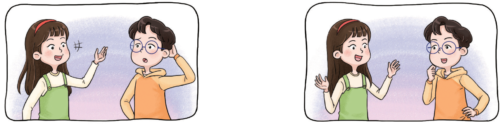

- 1
- 2~3
- 2
- 3
- 4
- 5
- 6
- 7
-
1 3과 5의 공배수와 최소공배수를 구해 보세요.
3의 배수 :3, 6, 9, 12, 15, 18, 21, 24, 27, 30, 33, 36, 39, 42, 45······5의 배수 :5, 10, 15, 20, 25, 30, 35, 40, 45, 50, 55, 60, 65, ······-
공배수15, 30, 45, 60······
-
최소공배수15
-
-
2~3 4와 6의 최소공배수를 구하려고 합니다. 물음에 답하세요.
46 -
2 4와 6의 배수를 써 보세요.
4의 배수 4 812162024283236······ 6의 배수 6 9218243036424854······ -
3 의 표에서 4와 6의 공배수를 모두 찾아 표 하고, 최소공배수를 구해 보세요.
-
숫자를 클릭하세요.
4의 배수 4813162024283236······ 6의 배수 61218243036424856······ -
12
-
-
4 어떤 두 수의 최소공배수가 15일 때 두 수의 공배수를 작은 것부터 3개 써 보세요.
예15, 30, 45 -
5 21부터 40까지의 수 중에서 2의 배수이면서 3의 배수인 수를 모두 써 보세요.
24, 30, 36 -
6 연수가 설명하는 수를 구해 보세요.
이 수는
6과 10의
공배수야.공배수는
많은데
······.50보다
크고 80
보다 작아.음 ······.
어떤
수일까?60 -
6 지혜는 1부터 50까지의 수를 차례대로 말하면서 다음 규칙으로 놀이를 했습니다. 물음에 답하세요.
-
-
6의 배수에서는 말하는 대신 손뼉을 칩니다.
-
9의 배수에서는 말하는 대신 제자리 뛰기를 합니다.
-
-
-
처음으로 손뼉을 치면서 동시에 제자리 뛰기를 해야 하는 수를 찾아보세요.
18 -
손뼉을 치면서 동시에 제자리 뛰기를 해야 하는 수를 모두 찾아보세요.
18, 36
-
-